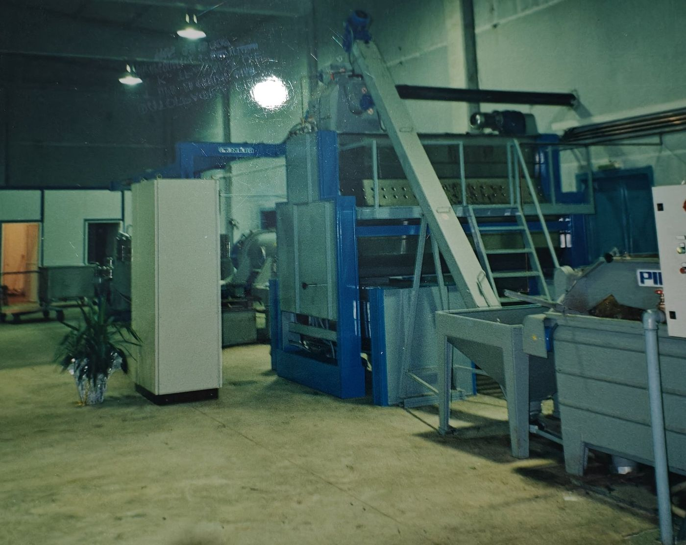

Από το 1963 στη Μαλεσίνα
Τρεις γενιές της οικογένειας Μαρκόπουλου και ένα ελαιοτριβείο ανάμεσα στους ελαιώνες της Λοκρίδας.
Η Μαλεσίνα είναι χτισμένη ανάμεσα σε ελαιώνες, αμπέλια και χωράφια, λίγα χιλιόμετρα από τη θάλασσα του Ευβοϊκού. Εδώ, το 1963, ο παππούς μας φύτεψε τα πρώτα δέντρα της οικογένειας και έστησε το ελαιοτριβείο.
Από τότε η δουλειά περνά από γενιά σε γενιά. Σήμερα το ελαιοτριβείο το τρέχει η τρίτη γενιά της οικογένειας, με σύγχρονη γραμμή από ανοξείδωτο χάλυβα και με όσα μάθαμε δουλεύοντας δίπλα στους μεγαλύτερους.
Τι δεν έχει αλλάξει
Ο εξοπλισμός ανανεώθηκε, οι κανόνες για την ποιότητα έγιναν αυστηρότεροι, η συγκομιδή άλλαξε. Η δουλειά μας παραμένει ίδια: να παραλάβουμε τον καρπό κάθε παραγωγού, να τον αλέσουμε προσεκτικά και να του δώσουμε πίσω το δικό του λάδι.

Από το οικογενειακό αρχείο
Φωτογραφίες από τα παλιότερα χρόνια του ελαιοτριβείου. Αν αναγνωρίζετε κάποιον, θα χαρούμε να μας το πείτε.



Η σεζόν τρέχει. Κλείστε τη σειρά σας με ένα τηλεφώνημα.